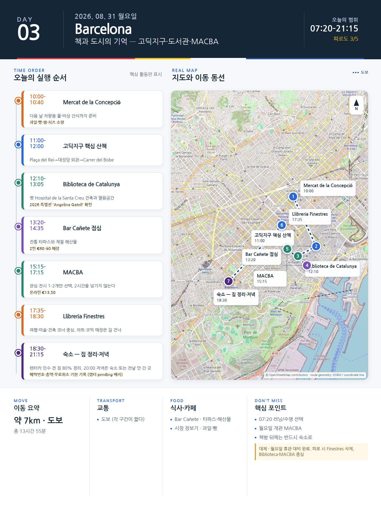

Day 3 · 8/31 월 · Barcelona
오늘의 감사 요약
- 핵심 실행
- 시장·Gòtic·도서관·MACBA
- 권장 출발
- 09:00 전후 시작
- 완충
- 오후 MACBA 전 60분 휴식
- 최고 리스크
- 월요일 휴관·도보 누적
- 우선 삭제
- Finestres·운동
- 대체안
- Biblioteca/MACBA 중심
- 식사·휴식
- 시장 또는 샌드위치
- 잠금 필요
- MACBA·식당
피로도
3/5
원고의 일자별 피로도 표기다.
시간표
| 07:20–08:10 | Jason 러닝 / Julia 선택 수영 | 러닝: Passeig de Sant Joan–Arc de Triomf–Ciutadella 왕복 5–7km. 수영: CEM Joan Miró 또는 CN Atlètic-Barceloneta 선택 |
| 08:10–09:30 | 숙소 아침·샤워 | 운동을 하지 않으면 이 시간을 늦잠과 세탁에 사용한다. |
| 10:00–10:40 | Mercat de la Concepció | 과일, 빵, 햄, 치즈를 소량 구입. 다음 날 차 안에서 먹을 물과 비상 간식도 준비한다. |
| 11:00–12:00 | 고딕지구 핵심 산책 | Plaça del Rei → Barcelona Cathedral 외관 → Carrer del Bisbe. 좁은 골목에서 휴대폰을 들고 오래 서 있지 않는다. |
| 12:10–13:05 | Biblioteca de Catalunya | 옛 Hospital de la Santa Creu 건축과 열람공간의 분위기. 2026 특별전 ‘Angelina Gatell, una vida compromesa’ 확인 |
| 13:20–14:35 | Bar Cañete 점심 | 전통 타파스와 제철 해산물. 예약 필수에 가깝다. 2인 €60–90 예상. |
| 14:35–15:10 | 라발 산책·커피 | Rambla del Raval을 길게 걷기보다 MACBA 쪽으로 짧게 이동한다. |
| 15:15–17:15 | MACBA | 월요일 개관. 2026 여름 전시 중 관심 전시 1–2개만 선택한다. 온라인 €13.50. |
| 17:35–18:30 | Llibreria Finestres | 일반서점과 아트·코믹 매장이 길 건너 두 건물로 운영된다. 여행·미술·건축 코너 중심으로 본다. |
| 18:30–19:30 | 숙소 휴식·짐 정리 | 다음 날 렌터카 인수 때문에 80% 이상 짐을 정리한다. 액체·간식·전자기기를 별도 가방에 둔다. |
| 20:00–21:15 | 저녁 선택 | 가벼운 식사는 숙소. 외식은 Bodega Joan 또는 Bar Cañete 중 전날 가지 않은 곳을 사용한다. |
이 날의 장소
일자별 시간표와 본문 표기에서 찾은 것이다. 하루의 전부가 아니라 장소 카드가 있는 것만 담는다.
카드 이미지 보기

카드의 지도영역은 일정 순서를 보여주는 개요이며 내비게이션이 아닙니다. 실제 도보·운전 경로는 Google Maps에서 다시 계산하세요.